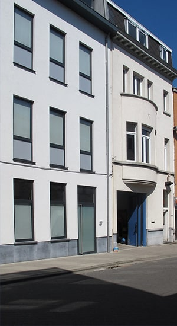

MvM
Since 1992, VZW Moeders voor Moeders has been committed to the poorest people in Flanders. More than 160 volunteers distribute materials and food to families with young children who are struggling financially. Every week, our non-profit organisation distributes food parcels to hundreds of families. In addition to food, mothers can obtain all kinds of material assistance for their children, such as children's clothes, care materials, baby equipment, etc. The non-profit organisation also provides various services, such as the resto-bébé, where the little ones can have a bath and a hot meal twice a week.
